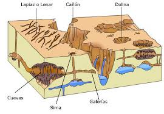
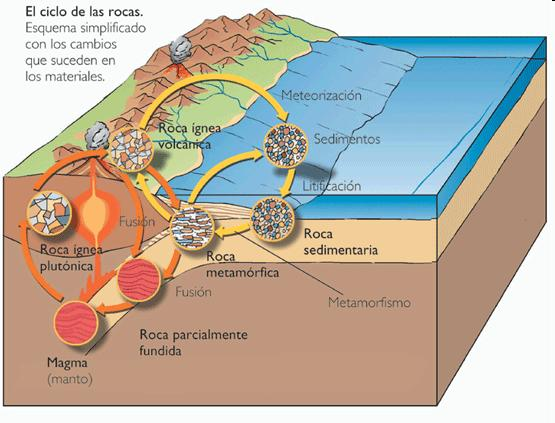
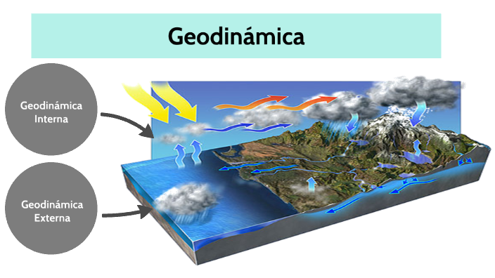

5.5 Geodinámica externa.
Se conoce como geodinámica al análisis de los cambios que se registran en la corteza del planeta Tierra. Encargada de estudiar los cambios que se producen en la corteza terrestre, bien sea en su superficie o dentro de su estructura interna; como consecuencia de los movimientos de la tierra. Determinando mediante la observación y análisis, las causas, desarrollo y consecuencias que originan sus etapas evolutivas.
La geodinámica define, describe e identifica el comportamiento de todos y cada uno de los cambios ocurridos en el pasado, las que están en pleno desarrollo y las que están por suceder.
//////////Geodinámica externa///////////
Se encarga de analizar las alteraciones o procesos que experimentan los agentes atmosféricos externos, llamados también exógenos (que se originan por causas externas), los cuales generan cambios importantes en la superficie terrestre; también estudia el comportamiento de las fuerzas o fenómenos que causan esas transformaciones, en las que actúan: ríos, glaciares, mares, vientos, etc, responsables directos del desgaste y la erosión de las masas rocosas iniciales que le dan forma al paisaje natural.
• Su campo de análisis es el encargado de explicar la acción que ejercen los factores, fuerzas, agentes o fenómenos sobre la materia natural que reviste a la superficie terrestre, causantes de los cambios del relieve y de la modificación que sufren las rocas y los minerales.
• En su análisis relaciona los agentes externos con los respectivos climas y suelos, como factor de incidencia en los diferentes fenómenos.
5.6 Geodinámica interna
Analiza la dinámica interna terrestre desde su centro de origen, los procesos de transformaciones endógenas (que se originan por causas internas); observando continuamente los diferentes fenómenos y fuerzas que se producen en las capas más profundas de la corteza terrestre (estructura interna de la tierra).
Analiza la dinámica interna terrestre desde su centro de origen, los procesos de transformaciones endógenas (que se originan por causas internas); observando continuamente los diferentes fenómenos y fuerzas que se producen en las capas más profundas de la corteza terrestre (estructura interna de la tierra).
Las técnicas geofísicas más frecuentes son:
• Análisis de ondas sísmicas (sismología)
• Medidas de GPS de alta precisión
• Estudios geológicos estructurales de campo
• Datación de muestras rocosas
• Cuantificación de las tasas de erosión con base en el contenido isotópico en muestras de roca
• Simulación computacional de procesos
/////////////////////////////////////////////////////////////////////////////////////////////////////////////////////////////////////////////////////////////////////////////////////////////////////////////////////////imagen de Geodinámica externa e interna.
